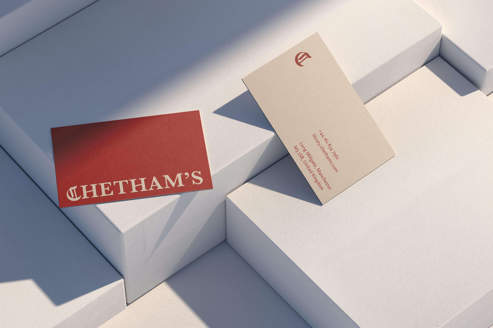
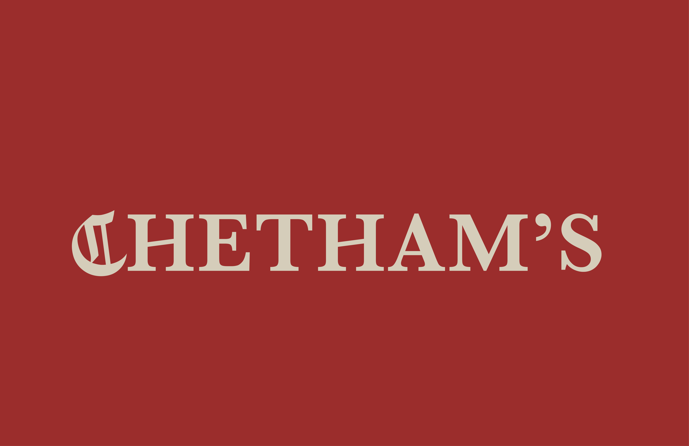

Rebranding:
Chetham's Library
Year
Medium
Instructor
2026
Indesign, Illustrator, Photoshop
Aggie Toppins

Context
Chetham's Library is the oldest public library in the United Kingdom. This rebranding highlights the library's long history while presenting it in a way that resonates with contemporary audiences.
Strategy
The wordmark combines the British serif typeface Baskerville with the Gothic Alte Schwabacher, evoking the visual character of early European books. The Gothic, tilted C becomes the focal point of the mark, while the angled crossbars of the H add distinctiveness and enhance the brand's memorability. The features of the wordmark were extended into a broader design system that can be applied across various media: The angled crossbar is echoed through angled horizontal lines, while the two vertical strokes within the C are reimagined as books on a shelf with varying weights.

poster design

business card design
website homepage design
Process
I began the project by exploring three distinct design directions. The first evokes books on a shelf, highlighting the library's physical and archival character. The second combines a serif typeface with a Gothic font, drawing inspiration from the decorative typography of early Europe. The third applies medieval typographic treatments to emphasize the long architectural history of the building.
The final design incorporates elements from all three concepts. Building on the second idea, I combined serif typeface with the Gothic typeface. The wordmark was then completed by integrating the tilted C and angled crossbar from the first concept with the vertical line passing through the C from the third concept.

3 wordmark directions

final wordmark